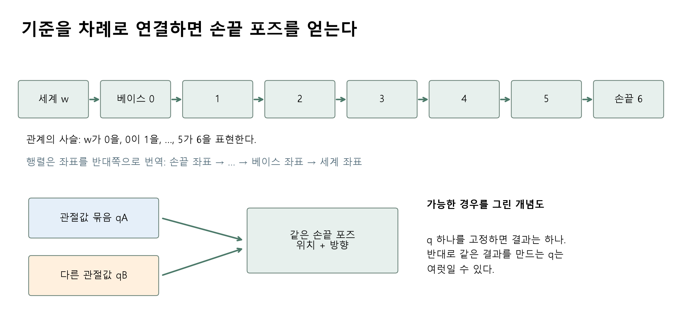
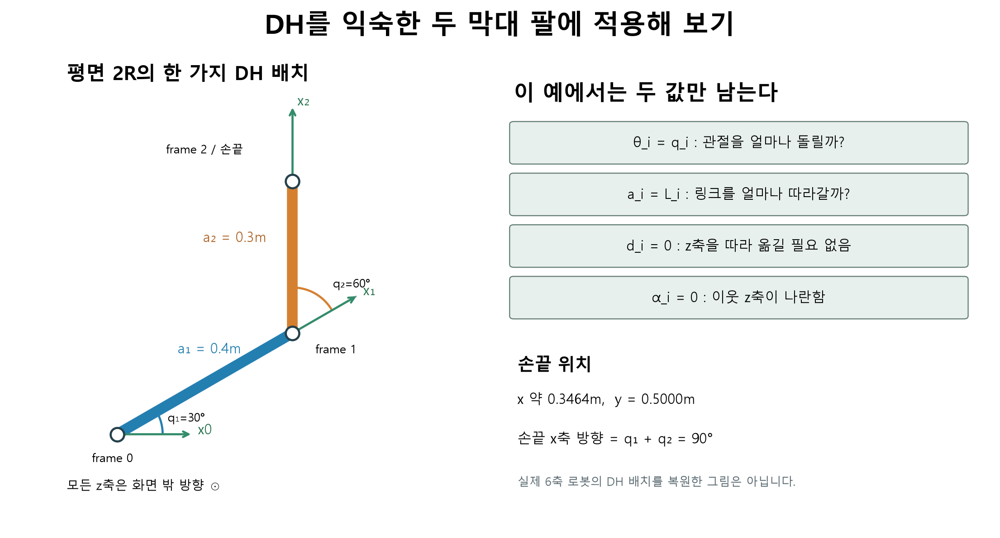
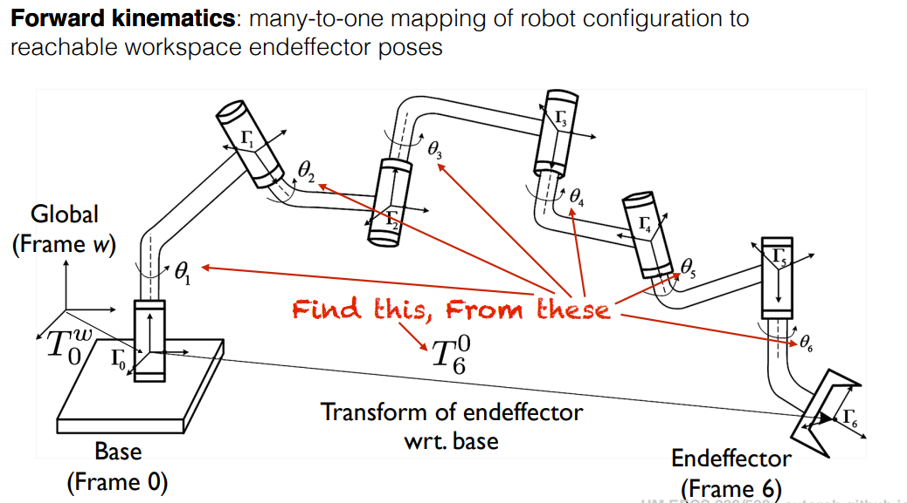
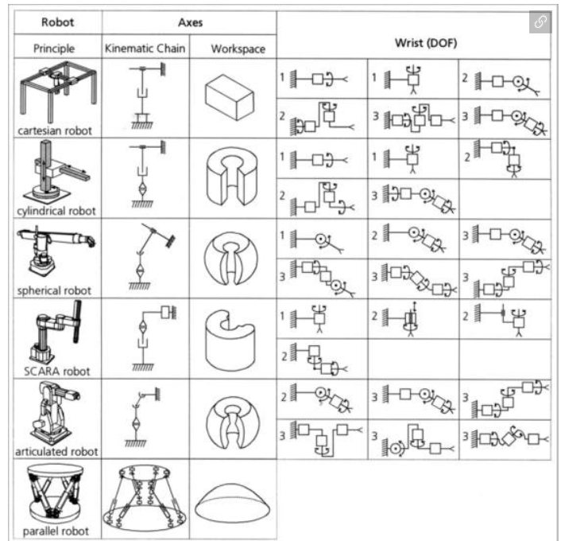

DH는 로봇의 각 몸체에 작은 좌표계를 붙이고, 이웃 좌표계의 관계를 같은 규칙으로 적는 약속이다. 어려운 로봇 모양을 “다음 기준까지 어떻게 돌고 얼마나 옮길까?”라는 표로 바꾼다고 생각하자.
1. 첫 그림은 “관절값으로 손끝 포즈 찾기”다
첫 첨부에는 세계 기준 w, 베이스 기준0, 중간 기준1~5, 손끝 기준6이 보인다. θ₁~θ₆을 알 때 베이스에서 본 손끝의 위치와 방향을 구하는 것이 순기구학이다. 포즈(pose)는 위치만이 아니라 방향까지 포함한다.

0T6는 “0번 기준에서 표현한 6번 기준의 위치·방향”이다. 한 번에 구하기 어렵다면 이웃 관계를 차례로 연결한다.
wT6 = wT0 0T6
첫 줄은 베이스에서 손끝까지, 둘째 줄은 세계에서 본 베이스 위치·방향까지 포함한다. 베이스가 세계 원점과 같은 자세라면 wT0는 단위행렬이지만, 항상 그런 것은 아니다.
관계의 그림은 w→0→1→…→6으로 읽을 수 있다. 하지만 점의 좌표에 행렬을 곱할 때는 오른쪽부터 적용한다. 0p = 0T6 6p는 6번 기준 좌표를0번 기준 좌표로 바꾸는 계산이다. 로봇 구조를 따라가는 방향과 좌표를 번역하는 방향을 혼동하지 않는다.
“many-to-one”은 순기구학의 답이 여러 개라는 뜻일까?
아니다. 구조와 베이스·도구 설정을 고정하고 관절값 묶음 q 하나를 주면 손끝 포즈는 하나다. 반대로 서로 다른 관절값 묶음이 같은 손끝 포즈를 만들 수 있어서 many-to-one이라고 표현한다. 모든 서로 다른 q가 같은 포즈를 만든다는 뜻도 아니다.
평면2링크의 팔꿈치 위/아래 자세는 같은 손끝 위치를 만들 수 있지만 손끝 방향은 다를 수 있다. 이를 곧바로 같은 전체 포즈의 증거로 쓰면 안 된다. 위치만 맞추는 문제와 방향까지 맞추는 문제를 구분한다.
2. DH 네 값은 “두 번 돌기 + 두 번 옮기기”
아래에서는 Ai=i−1Ti로 정한다. 즉 i번 기준을 바로 앞 i−1번 기준에서 표현한다. 열벡터와 오른손 좌표계를 사용한다.
| 값 | 쉬운 뜻 | 이 관례의 기준 | 단위 |
|---|---|---|---|
| θi | 관절 축 주위로 얼마나 돌까? | zi−1 주위 회전 | rad |
| di | 관절 축을 따라 얼마나 옮길까? | zi−1 방향 이동 | m |
| ai | 이웃 두 축 사이를 얼마나 건널까? | xi 방향 공통법선 거리 | m |
| αi | 이웃 관절 축이 얼마나 비틀려 있나? | xi 주위로 zi−1에서 zi로 회전 | rad |
standard DH에서는 i번 관절축을 zi−1로 두고, 이웃 z축 사이의 공통법선 방향을 이용해 xi를 정한다. 공통법선은 두 축에 모두 수직으로 건너가는 방향이다. 축이 평행하거나 교차할 때 선택의 여지가 있으며 원점과 부호도 일관되게 정해야 한다. 눈에 보이는 막대의 아무 방향이나 x축으로 정하고 네 숫자를 채우는 방법이 아니다.
좌표계를 앞에서부터 세워 간다는 해석은 z회전→z이동→x이동→x회전이다. 위 행렬을 이미 주어진 점 좌표에 곱한다면 오른쪽 인자가 먼저 작용한다. 같은 행렬식을 서로 다른 설명 관점으로 읽는 것이므로 순서를 뒤집어 새로운 식을 만들지 않는다.
회전관절에서는 θ가 관절값에 따라 바뀌고 d·a·α는 구조의 상수다. 직선관절에서는 d가 바뀌고 θ·a·α는 상수다. 각도 영점 오프셋이나 관절 양의 방향을 정했다면 θ=q+오프셋처럼 그 약속도 반영해야 한다.
4×4 행렬을 보고 싶다면
cθ=cosθ, sθ=sinθ, cα=cosα, sα=sinα로 줄여 썼다. 각도는 라디안, 마지막 열의 이동은 m다.
외우기 전에 네 동작의 곱이라는 뜻을 이해한다. 왼쪽 위3×3은 방향, 오른쪽 위3칸은 위치다. 마지막 줄은 동차좌표를 위한 [0,0,0,1]이다.
3. 익숙한 40cm·30cm 팔에 적용하기
새 기계를 바로 다루기보다 이미 아는 두 막대 팔로 연습하자. 두 관절의 z축은 화면 밖을 향하고 서로 나란하다. 아래 그림처럼 기준을 붙이면 d와α가 모두0이라 표가 간단해진다.

| i | θi | di | ai | αi |
|---|---|---|---|---|
| 1 | q₁ | 0m | L₁=0.4m | 0rad |
| 2 | q₂ | 0m | L₂=0.3m | 0rad |
이때 A₁=Rz(q₁)Tx(L₁), A₂=Rz(q₂)Tx(L₂), 0T2=A₁A₂다. 곱한 행렬의 위치 부분은 이전에 익힌 식과 같다.
y = L₁ sin q₁ + L₂ sin(q₁+q₂)
손끝 x축 방향 φ = q₁+q₂
q₁=30°, q₂=60°라면 아래팔은 0번(베이스) 좌표계의 x축에서90° 방향이다. x≈0.3464m, y=0.5000m, 손끝 방향90°다. DH가 다른 물리를 만든 것이 아니라 같은 연결 관계를 규칙적인 표로 적은 것이다.
파이썬에서 행렬을 어떻게 연결할까?
import numpy as np
def standard_dh(theta, d, a, alpha):
c, s = np.cos(theta), np.sin(theta)
ca, sa = np.cos(alpha), np.sin(alpha)
return np.array([
[c, -s*ca, s*sa, a*c],
[s, c*ca, -c*sa, a*s],
[0, sa, ca, d],
[0, 0, 0, 1],
])
q1, q2 = np.deg2rad([30, 60])
A1 = standard_dh(q1, 0, 0.4, 0)
A2 = standard_dh(q2, 0, 0.3, 0)
T02 = A1 @ A2
손끝_위치 = T02[:3, 3]함수는 네 DH 값으로 이웃 변환 한 개를 만든다. deg2rad는 도를 라디안으로 바꾼다. A1·A2에는 각 링크의 길이를 넣는다. @는 행렬 곱이며 *의 원소별 곱과 다르다. [:3,3]은 마지막 열의 위 세 칸을 읽는다. 로봇 시뮬레이터 실행 코드가 아니라 순수 행렬 계산 예제다.
4. 둘째 그림은 DH 표가 아니라 로봇 종류 표다
두 번째 첨부에는 Cartesian, cylindrical, spherical, SCARA, articulated, parallel이라는 구조 이름, 기구 사슬, 작업 공간과 손목 DOF 예시가 있다. θ·d·a·α를 관절별로 적은 DH 파라미터 표는 아니다.
| 그림의 분류 | 쉬운 읽기 |
|---|---|
| Cartesian / 직교형 | 서로 직각인 레일 방향으로 움직이는 구조를 떠올린다. |
| Cylindrical / 원통형 | 회전과 직선 이동을 조합한 구조를 떠올린다. |
| Spherical / 구면형 | 방향 회전과 뻗는 동작을 조합한 예시다. |
| SCARA | 평면에서 관절로 뻗는 팔과 상하 이동을 조합한 예시다. |
| Articulated / 관절형 | 여러 회전 관절을 이어 사람 팔처럼 움직이는 예시다. |
| Parallel / 병렬형 | 여러 연결 사슬이 하나의 움직이는 플랫폼을 함께 지지한다. |
작업 공간 모양은 구조를 이해하기 위한 개략 그림이다. 실제 범위는 링크 길이·각도 제한·충돌에 따라 달라진다. 손목 DOF는 손목에서 독립적으로 움직일 수 있는 정도를 가리키며, 표의 작은 숫자를 로봇 전체 DOF라고 옮겨 적지 않는다. 첨부의 세부 손목 기호와 모든 숫자는 해상도가 낮아 확정 전사하지 않았다.
첫 이미지에 좌표축이 그려져 있다는 이유만으로 해당 6축 로봇의 정확한 DH 표를 완성할 수는 없다. 관절축 방향·치수·영점·좌표계 부착 규칙이 더 필요하다. 둘째 이미지의 병렬형도 단일 직렬 사슬의 DH 곱 하나로 전체 닫힌 구조를 끝내는 예제로 취급하지 않는다.
첨부 원본 확인


5. 스스로 확인하기
베이스 위치가 바뀌면 ⁰T₆과 ʷT₆ 모두 꼭 바뀔까?
관절값과 구조가 그대로라면 베이스 기준 손끝 변환 ⁰T₆은 그대로다. 세계 기준 베이스 변환 ʷT₀이 바뀌므로 세계 기준 손끝 변환 ʷT₆은 달라진다.
DH 표에 θ가 적혀 있으면 모두 고정 상수일까?
회전관절의 θ는 관절값에 따라 변한다. 직선관절은 d가 변한다. 관절 타입과 영점 오프셋까지 함께 확인한다.
동일한 끝점 x,y이면 항상 같은 포즈일까?
아니다. 손끝이 향하는 방향도 같아야 같은 포즈다. 컵을 같은 곳에 들고 있어도 입구가 위인지 아래인지에 따라 자세가 다르다.
6. 결과를 보고, 하나만 바꾸기
3D DH 실험실 열기. 아래 결과를 먼저 보고 실험실에서 한 값씩 바꾼다. 같은 결과가 보이는지 확인한 뒤 이유를 읽어 보자.
화면의 선은 좌표계 원점들을 잇는 운동학 개념도다. 실제 몸체 외형·두께·충돌형상을 복원한 CAD 모델이 아니다. 점이 안 움직여 보여도 끝 프레임의 축 방향은 바뀌었을 수 있으므로 축 화살표를 함께 본다.
실험실은 관절을 움직이는 것과 로봇 설계를 바꾸는 것을 모두 허용한다. 실제 회전관절의 움직이는 변수는 보통 θ이고 직선관절은 d다. a와α를 바꾸는 것은 보통 링크 길이·축 배치 자체를 바꾸는 설계 실험이다. “네 값 모두 모터 네 개”라고 생각하지 않는다.
| 실험 | 다른 값은 고정하고 | 미리 볼 결과 | 관찰할 것 |
|---|---|---|---|
| 1 · θ | 평면0.4/0.3m 팔에서 θ1만0→90° | 손끝 y = 0.7m | 길이 유지, 자손이 함께 회전 |
| 2 · d | 편 팔에서 d1만0→0.2m | 위쪽 z가 0.2m 증가 | z축을 따른 이동 |
| 3 · a | 편 팔에서 a1만0.4→0.6m | 손끝 x = 0.9m | 팔꿈치·손끝 거리 변화 |
| 4 · α | 편 팔에서 α1만0→90° | 끝점은 그대로, 축 방향이 바뀜 | 위치와 자세를 따로 읽기 |
| 5 · 비틀린 다음 관절 | α1=90° 유지, θ2만0→90° | 세계 +z 쪽 | 다음 관절의 실제 z1축 |
| 6 · 교안 예제 | θ1=30° 유지, θ2만0→45° | 75° | 상대각과 절대방향 구분 |
| 7 · 연산 순서 | 한 링크 d=.2,a=.4,α=0에서 θ만0→90° | (0, 0.4, 0.2)m | a이동이 회전된 x를 따르는지 |
관찰한 뒤 설명 확인: θ·d·a
1번 손끝은 (0,0.7,0)m. 첫 관절이90° 돌면 연결된 두 막대가 함께 방향을 바꾼다. 2번은 (0.7,0,0.2)m로 z만 바뀐다. 3번은 (0.9,0,0)m로 길이 합이 늘어난다. 각도 변화, 축을 따른 이동, 설계 길이 변화를 구분하자.
다시 확인: θ1을−90°로 바꾸면 손끝 y부호는? d1을0.1m로 줄이면 어떤 좌표만 바뀌는가? a1을0.5m로 바꾸면 길이 합은? 정답 숫자를 외우기보다 변화 방향을 설명해 본다.
관찰한 뒤 설명 확인: α와 다음 θ
4번에서 손끝 위치는 (0.7,0,0)m 그대로지만 z1은 세계−y방향으로 기울었다. 축을 따라 놓인 막대의 끝은 위치가 그대로여도 좌표계 방향은 바뀔 수 있다. 5번에서 θ2를90° 돌리면 손끝은 (0.4,0,0.3)m가 된다. θ2는 세계z가 아니라 앞 링크가 만든 z1 주위를 돌기 때문이다.
마지막 α만 바꾸는8번 실험: 후속 링크가 없는 마지막 행의 원점은 [a cosθ,a sinθ,d]여서 α와 무관하다. α는 방향을 바꾼다. 앞 링크의 α를 바꾸면 후속 관절축과 후속 끝점이 바뀔 수 있고, 마지막 원점에서 떨어진 도구점도 방향 변화에 따라 움직일 수 있다. “점이 그대로니 실패”라고 판단하지 않는다.
다시 확인: α1을0°로 되돌리고 θ2=90°를 유지해 보자. 손끝은 (0.4,0.3,0)m다. 두 경우를 나란히 보면 왜3D에서 모든 θ를 한 숫자로 더할 수 없는지 드러난다.
관찰한 뒤 설명 확인: 상대각과 연산 순서
6번은 교안의30°/45° 예제로 손끝 위치 약(0.42406,0.48978,0)m, 방향75°다. 평면에서 z축들이 나란해 방향을 합할 수 있다. 7번의 원점은 (0,0.4,0.2)m다. θ=90°로 돌아간 x방향은 세계+y이므로 a=0.4m가 y좌표에 들어간다.
standard DH의 Rz(θ)Tz(d)Tx(a)Rx(α)를 마음대로 Tx(a)Rz(θ)…로 바꾸면 다른 원점이 된다. 좌표계를 차례로 세우는 설명과, 완성한 행렬을 점에 오른쪽부터 적용하는 설명을 구분한다.
출처와 참고 자료
공식 대조: Peter Corke Robotics Toolbox의 Link.A standard/modified 구현. 위 standard 행렬을 확인했으며 modified 행렬은 이 페이지 계산에 사용하지 않았다.
보충 도식·평면2R 수치 예는 설명을 위해 새로 구성했다. 첨부 그림의 실제6축 DH 값이나 작은 손목 DOF를 추정한 결과가 아니다. 관련 기존 학습: 좌표계 사슬, 부모·자식, 2링크 실험실.
교과서 근거: 로봇 교과서 PDF112쪽(인쇄102쪽), DH 정의·표·코드와 PDF113쪽(인쇄103쪽), 결과·좌표계 관례 주의. 교안 연결: 로봇기초-2일차 PDF7쪽,30°/45° 변환 사슬. 1~5·7번은 같은 표준DH 공식을 이해하기 위해 새로 구성한 통제 실험이며 실제6축 로봇의 측정값이 아니다.